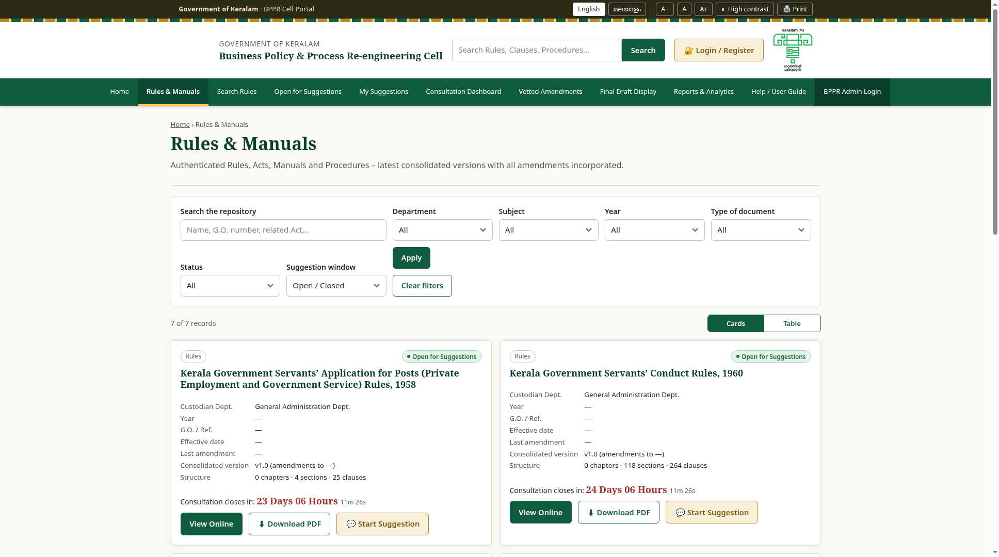
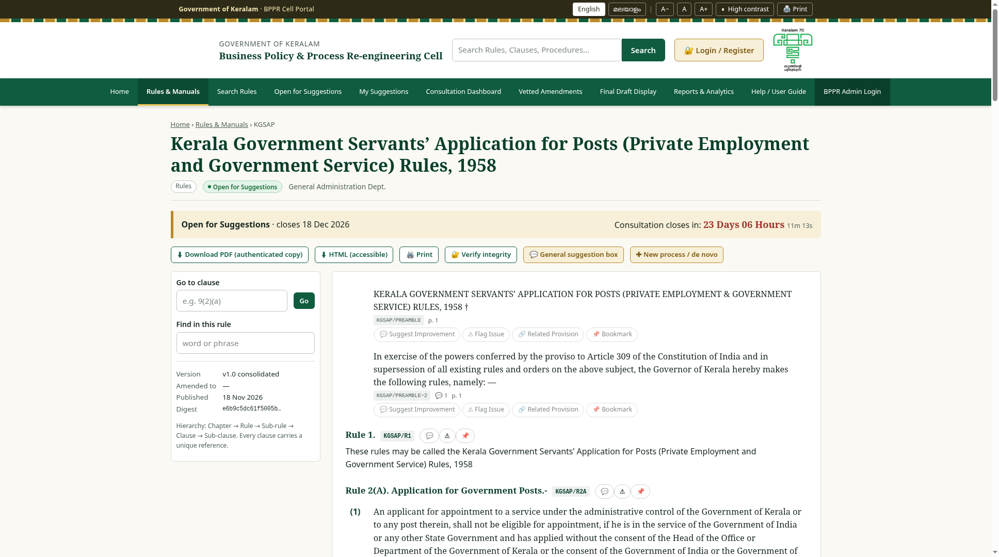
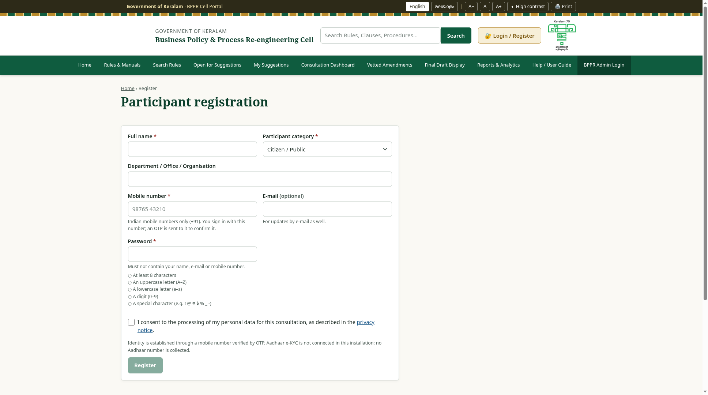
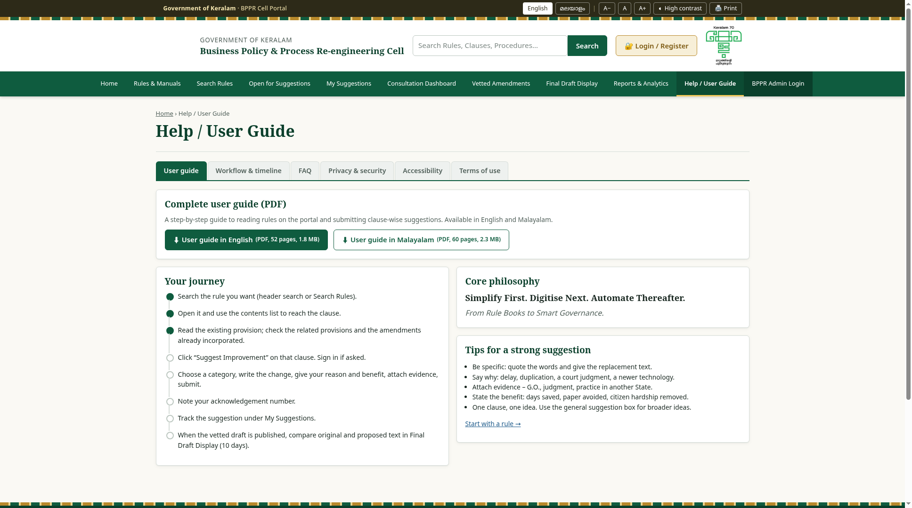

Suggest simpler government rules through BPPR
Kerala's Business Policy & Process Re-engineering portal lets citizens, experts and institutions propose changes to specific clauses of government rules and procedures.
സർക്കാർ ചട്ടങ്ങൾ ലളിതമാക്കാൻ BPPR വഴി നിർദേശിക്കാം
സർക്കാർ നിയമങ്ങളിലെയും ചട്ടങ്ങളിലെയും നടപടിക്രമങ്ങളിലെയും മാറ്റങ്ങൾ നിർദേശിക്കാൻ പൊതുജനങ്ങൾക്കും വിദഗ്ധർക്കും സ്ഥാപനങ്ങൾക്കും കേരളത്തിന്റെ BPPR പോർട്ടൽ ഉപയോഗിക്കാം.
What is BPPR, and who can use it?
BPPR means Business Policy & Process Re-engineering. The General Administration Department's BPPR Cell reviews suggestions to remove outdated wording, duplicate approvals, excessive paperwork and avoidable delays. Citizens/public, government employees, departments, institutions, professional bodies, subject experts and academic institutions can participate. Reading published rules does not require sign-in; sending a suggestion does.
A suggestion is an input for review, not an automatic legal amendment or a personal-service complaint resolution. Officers and the relevant departments decide what proceeds. Do not stop following an existing rule because you submitted a proposed change.
1. Find an open rule
Open Open for Suggestions, or use Rules & Manuals and its department, document-type and status filters. Choose Read & suggest or View Online. Some listed documents are still being digitised, so their presence does not mean submissions are open.
Check the closing date on your particular consultation. There is no single portal-wide deadline. The guide says the usual window is 30 days, but actual listed windows vary. Date labels and countdowns should not be treated as interchangeable; submit early and ask the Cell if they disagree.
BPPR എന്താണ്? ആർക്കെല്ലാം ഉപയോഗിക്കാം?
Business Policy & Process Re-engineering എന്നതിന്റെ ചുരുക്കമാണ് BPPR. കാലഹരണപ്പെട്ട വ്യവസ്ഥകൾ, ആവർത്തിക്കുന്ന അനുമതികൾ, അധിക രേഖകൾ, അനാവശ്യ കാലതാമസം എന്നിവ കുറയ്ക്കാനുള്ള നിർദേശങ്ങൾ പൊതുഭരണ വകുപ്പിന്റെ BPPR സെൽ പരിശോധിക്കുന്നു. പൊതുജനങ്ങൾ, സർക്കാർ ജീവനക്കാർ, വകുപ്പുകൾ, സ്ഥാപനങ്ങൾ, പ്രൊഫഷണൽ സംഘടനകൾ, വിദഗ്ധർ, അക്കാദമിക് സ്ഥാപനങ്ങൾ എന്നിവർക്കു പങ്കെടുക്കാം. പ്രസിദ്ധീകരിച്ച ചട്ടങ്ങൾ വായിക്കാൻ സൈൻ ഇൻ വേണ്ട; നിർദേശം അയയ്ക്കാൻ വേണം.
നിർദേശം അയച്ചാൽ നിയമം ഉടൻ മാറില്ല. ബന്ധപ്പെട്ട ഉദ്യോഗസ്ഥരും വകുപ്പുകളും പരിശോധിച്ചാണ് തുടർനടപടി. വ്യക്തിഗത സേവനപരാതി തീർപ്പാക്കുമെന്ന് ഉറപ്പുള്ള സംവിധാനം എന്ന നിലയിലും കാണരുത്. മാറ്റം നിർദേശിച്ചതുകൊണ്ട് നിലവിലുള്ള ചട്ടം പാലിക്കാതിരിക്കരുത്.
1. നിർദേശങ്ങൾ സ്വീകരിക്കുന്ന ചട്ടം കണ്ടെത്തുക
Open for Suggestions തുറക്കുക. അല്ലെങ്കിൽ Rules & Manuals പേജിലെ വകുപ്പ്, രേഖയുടെ തരം, സ്റ്റാറ്റസ് തുടങ്ങിയ ഫിൽട്ടറുകൾ ഉപയോഗിക്കുക. Read & suggest അല്ലെങ്കിൽ View Online തിരഞ്ഞെടുക്കുക. ചില രേഖകൾ ഡിജിറ്റൈസേഷൻ ഘട്ടത്തിലായിരിക്കും; പട്ടികയിലുണ്ടെന്നതുകൊണ്ട് നിർദേശം അയയ്ക്കാൻ കഴിയണമെന്നില്ല.
നിങ്ങൾ തിരഞ്ഞെടുക്കുന്ന ചട്ടത്തിന്റെ അവസാന തീയതി നോക്കുക. പോർട്ടലിന് പൊതുവായി ഒരൊറ്റ അവസാന തീയതിയില്ല. സാധാരണ സമയം 30 ദിവസം എന്നാണ് ഗൈഡ് പറയുന്നത്; യഥാർത്ഥ സമയപരിധി വ്യത്യാസപ്പെടാം. തീയതിയും കൗണ്ട്ഡൗണും തമ്മിൽ വ്യത്യാസം കണ്ടാൽ നേരത്തെ സമർപ്പിക്കുക; BPPR സെല്ലിനോട് ചോദിക്കുക.

Rules & Manuals: filters and publication status. Full-HD desktop capture, 25 November 2026. Header logo containing the national emblem masked. Tap to enlarge.Rules & Manuals: ഫിൽട്ടറുകളും പ്രസിദ്ധീകരണ നിലയും. 2026 നവംബർ 25ലെ ഫുൾ എച്ച്ഡി ഡെസ്ക്ടോപ്പ് ചിത്രം. ദേശീയ ചിഹ്നമുള്ള ഹെഡർ ലോഗോ മറച്ചിരിക്കുന്നു. വലുതാക്കാൻ ചിത്രത്തിൽ തൊടുക.
2. Read the exact clause
Open the relevant rule. Use Go to clause, Find in this rule and the contents list. Read the existing provision, related provisions and version information. Note the exact clause reference. The example below is KGSAP, not a recommendation to change that rule.
Click Suggest Improvement beside the clause. The live public route showed a sign-in/register prompt. Use the general suggestion box for a broader rule-level idea, or New process / de novo for an alternative procedure.
2. കൃത്യമായ വ്യവസ്ഥ വായിക്കുക
ചട്ടം തുറന്ന ശേഷം Go to clause, Find in this rule, ഉള്ളടക്കപ്പട്ടിക എന്നിവ ഉപയോഗിക്കുക. നിലവിലുള്ള വ്യവസ്ഥയും ബന്ധപ്പെട്ട വ്യവസ്ഥകളും പതിപ്പിന്റെ വിവരങ്ങളും വായിക്കുക. വ്യവസ്ഥയുടെ റഫറൻസ് കുറിച്ചുവെക്കുക. താഴെ കാണുന്ന KGSAP പേജ് ഉപയോഗരീതി കാണിക്കാനാണ്; ആ ചട്ടത്തിൽ മാറ്റം വേണമെന്ന നിർദേശമല്ല.
വ്യവസ്ഥയ്ക്കരികിലെ Suggest Improvement അമർത്തുക. സൈൻ ഇൻ/രജിസ്റ്റർ ചെയ്യാനുള്ള അറിയിപ്പാണ് ഞങ്ങൾക്ക് ലഭിച്ചത്. പൊതുവായ ആശയത്തിന് General suggestion box, പുതിയ നടപടിക്രമത്തിന് New process / de novo എന്നിവ ഉപയോഗിക്കാം.

Rule reader: clause references, search and Suggest Improvement controls. Full-HD desktop capture, 25 November 2026. Header logo containing the national emblem masked. Tap to enlarge.ചട്ടം വായിക്കാനുള്ള പേജ്: ക്ലോസ് റഫറൻസ്, തിരച്ചിൽ, നിർദേശം നൽകാനുള്ള ബട്ടൺ. 2026 നവംബർ 25ലെ ഫുൾ എച്ച്ഡി ഡെസ്ക്ടോപ്പ് ചിത്രം. ദേശീയ ചിഹ്നമുള്ള ഹെഡർ ലോഗോ മറച്ചിരിക്കുന്നു. വലുതാക്കാൻ ചിത്രത്തിൽ തൊടുക.
3. Register and sign in
- Choose Register. Enter your name and participant category, normally Citizen / Public for an individual citizen. Add organisation details where relevant.
- The live form requires an Indian mobile number (+91), verified by OTP. Email is optional for updates. Do not rely on the older email-only directions.
- Create your own password following the on-screen checklist: at least eight characters, uppercase, lowercase, a digit and a special character, without your name, email or mobile number.
- Read the privacy notice and consent statement before registering. The form says no Aadhaar number is collected and Aadhaar e-KYC is not connected.
- Complete the portal's mobile verification instructions yourself. No OTP was requested or delivered in our check. The current sign-in page accepts mobile number or email plus password. Use Forgot password rather than repeated guesses.
3. രജിസ്റ്റർ ചെയ്ത് സൈൻ ഇൻ ചെയ്യുക
- Register തിരഞ്ഞെടുക്കുക. പേരും പങ്കാളിയുടെ വിഭാഗവും നൽകുക. സാധാരണ വ്യക്തി Citizen / Public തിരഞ്ഞെടുക്കാം. ബാധകമാണെങ്കിൽ സ്ഥാപനവിവരം ചേർക്കുക.
- നിലവിലെ ഫോമിൽ ഇന്ത്യൻ മൊബൈൽ നമ്പറും (+91) OTP സ്ഥിരീകരണവും ആവശ്യമാണ്. അപ്ഡേറ്റുകൾക്കുള്ള ഇമെയിൽ ഐച്ഛികമാണ്. പഴയ ഇമെയിൽ-മാത്രം ഗൈഡ് ആശ്രയിക്കരുത്.
- ഫോമിലെ ചെക്ക്ലിസ്റ്റ് പാലിച്ച് സ്വന്തം പാസ്വേഡ് സജ്ജമാക്കുക: കുറഞ്ഞത് എട്ട് അക്ഷരങ്ങൾ, വലിയക്ഷരം, ചെറിയക്ഷരം, അക്കം, പ്രത്യേക ചിഹ്നം എന്നിവ വേണം. പേര്, ഇമെയിൽ, മൊബൈൽ നമ്പർ എന്നിവ ഉൾപ്പെടുത്തരുത്.
- സ്വകാര്യതാ അറിയിപ്പും സമ്മതവാചകവും വായിക്കുക. ആധാർ നമ്പർ ശേഖരിക്കുന്നില്ലെന്നും ആധാർ e-KYC ബന്ധിപ്പിച്ചിട്ടില്ലെന്നും ഫോം പറയുന്നു.
- പോർട്ടൽ പറയുന്ന മൊബൈൽ സ്ഥിരീകരണം സ്വയം പൂർത്തിയാക്കുക. ഞങ്ങൾ OTP ആവശ്യപ്പെട്ടിട്ടില്ല. സൈൻ ഇൻ പേജിൽ മൊബൈൽ നമ്പർ അല്ലെങ്കിൽ ഇമെയിലും പാസ്വേഡും നൽകാം. പാസ്വേഡ് മറന്നാൽ ആവർത്തിച്ച് ഊഹിക്കാതെ Forgot password ഉപയോഗിക്കുക.

Blank live registration form: required mobile OTP route, optional email. Full-HD desktop capture, 25 November 2026. Header logo containing the national emblem masked. Tap to enlarge.നിലവിലെ ശൂന്യ രജിസ്ട്രേഷൻ ഫോം: മൊബൈൽ OTP ആവശ്യമാണ്; ഇമെയിൽ ഐച്ഛികം. 2026 നവംബർ 25ലെ ഫുൾ എച്ച്ഡി ഡെസ്ക്ടോപ്പ് ചിത്രം. ദേശീയ ചിഹ്നമുള്ള ഹെഡർ ലോഗോ മറച്ചിരിക്കുന്നു. വലുതാക്കാൻ ചിത്രത്തിൽ തൊടുക.
4. Write a useful suggestion
The remaining submission steps below come from the official help page and citizen PDF. We did not create an account, open an authenticated submission form or submit a suggestion.
- Choose the suggestion type, such as obsolete provision, unclear wording, procedural delay, duplicate approval or excessive documentation.
- Quote the existing words and write your proposed replacement or alternative procedure.
- Give a reason and practical benefit, such as fewer visits, days saved or paperwork avoided. Keep one clause to one main idea.
- Add supporting evidence where relevant. The PDF describes PDF/Word/image uploads, up to five files of 5 MB each. Confirm the current logged-in form's limits before uploading; these limits were not tested.
- Read the declaration, check your text and submit only when you are ready. Suggestions are made in your identified capacity, not anonymously.
5. Save the acknowledgement and track it
The guide says a successful submission produces an acknowledgement/reference number. Save or print the receipt, then use My Suggestions. The PDF also describes reference-based status tracking, including pending, under review, clarification sought, shortlisted, accepted and not accepted. We did not generate a receipt or test tracking.
What happens next?
The BPPR Cell screens proposals and sends them to relevant departments/experts. Legal review, vetting, final draft display and approval follow where applicable. A draft may be displayed for 10 days, but that is a review stage, not a promise that your suggestion becomes law in 10 days. Automated assistance is advisory; authorised officers make decisions.
Rewards, privacy and limits
The Kerala government announcement mentions certificates and prizes. However, the portal FAQ calls recognition a prototype proposal subject to sanction and says the portal does not make payments. Do not apply expecting a guaranteed cash reward or a fixed amount.
The privacy notice is itself marked draft, and does not yet match every current mobile-registration field. Read it before sharing information. Keep passwords and OTPs private; avoid unnecessary Aadhaar, bank details or other people's personal documents in your suggestion. For unresolved registration, deadline or policy questions contact bpprcell.gad@kerala.gov.in, as listed on the portal.
4. വ്യക്തമായ നിർദേശം തയ്യാറാക്കുക
ഇനി പറയുന്ന സമർപ്പണ ഘട്ടങ്ങൾ ഔദ്യോഗിക Help പേജിലും PDF ഗൈഡിലും നിന്നുള്ളതാണ്. ഞങ്ങൾ അക്കൗണ്ട് ഉണ്ടാക്കിയിട്ടില്ല; ലോഗിൻ ചെയ്ത ശേഷമുള്ള ഫോം തുറക്കുകയോ നിർദേശം അയയ്ക്കുകയോ ചെയ്തിട്ടില്ല.
- കാലഹരണപ്പെട്ട വ്യവസ്ഥ, അവ്യക്തമായ വാചകം, കാലതാമസം, ആവർത്തിക്കുന്ന അനുമതി, അധിക രേഖകൾ തുടങ്ങിയ അനുയോജ്യമായ വിഭാഗം തിരഞ്ഞെടുക്കുക.
- മാറ്റേണ്ട നിലവിലെ വാചകവും പകരം നിർദേശിക്കുന്ന വാചകമോ നടപടിക്രമമോ എഴുതുക.
- കാരണം വ്യക്തമാക്കുക. എത്ര സന്ദർശനങ്ങൾ കുറയും, എത്ര സമയം ലാഭിക്കും, ഏത് രേഖ ഒഴിവാക്കാം തുടങ്ങിയ പ്രയോജനം പറയുക. ഒരു ക്ലോസിൽ ഒരു പ്രധാന ആശയം നൽകുക.
- ബാധകമാണെങ്കിൽ തെളിവുകൾ ചേർക്കുക. PDF ഗൈഡിൽ PDF/Word/ചിത്രങ്ങൾ, പരമാവധി അഞ്ച് ഫയലുകൾ, ഓരോന്നും 5 MB വരെ എന്നാണ് പറയുന്നത്. അപ്ലോഡ് ചെയ്യുന്നതിനു മുമ്പ് നിലവിലെ ലോഗിൻ ഫോമിലെ പരിധി പരിശോധിക്കുക; ഞങ്ങൾ പരീക്ഷിച്ചിട്ടില്ല.
- ഡിക്ലറേഷൻ വായിച്ച് വിവരങ്ങൾ പരിശോധിച്ചശേഷം മാത്രം സമർപ്പിക്കുക. അജ്ഞാതമായി അല്ല, സ്വന്തം തിരിച്ചറിയലോടെയാണ് നിർദേശം നൽകുന്നത്.
5. അക്നോളഡ്ജ്മെന്റ് സൂക്ഷിച്ച് പിന്തുടരുക
വിജയകരമായി സമർപ്പിച്ചാൽ റഫറൻസ് നമ്പർ ലഭിക്കുമെന്നാണ് ഗൈഡ് പറയുന്നത്. രസീത് സൂക്ഷിക്കുകയോ പ്രിന്റ് ചെയ്യുകയോ ചെയ്ത് My Suggestions ഉപയോഗിക്കുക. റഫറൻസ് നമ്പർ ഉപയോഗിച്ചുള്ള സ്റ്റാറ്റസ് പരിശോധനയും PDF വിവരിക്കുന്നു. Pending, Under review, Clarification sought, Shortlisted, Accepted, Not accepted തുടങ്ങിയ നിലകൾ കാണാം. ഞങ്ങൾ രസീത് ഉണ്ടാക്കുകയോ ട്രാക്കിംഗ് പരീക്ഷിക്കുകയോ ചെയ്തിട്ടില്ല.
തുടർന്ന് എന്താണ് നടക്കുന്നത്?
BPPR സെൽ നിർദേശങ്ങൾ പരിശോധിച്ച് ബന്ധപ്പെട്ട വകുപ്പുകൾക്കും വിദഗ്ധർക്കും കൈമാറും. ആവശ്യമായ നിയമപരിശോധന, വെറ്റിംഗ്, കരട് പ്രദർശനം, അംഗീകാരം എന്നിവയ്ക്കുശേഷമാണ് തുടർനടപടി. കരട് 10 ദിവസം പ്രദർശിപ്പിക്കുന്നത് നിങ്ങളുടെ നിർദേശം 10 ദിവസത്തിനകം നിയമമാകുമെന്ന ഉറപ്പല്ല. ഓട്ടോമേറ്റഡ് സഹായം ഉപദേശപരമാണ്; തീരുമാനങ്ങൾ അധികാരപ്പെട്ട ഉദ്യോഗസ്ഥരാണ് എടുക്കുന്നത്.
സമ്മാനം, സ്വകാര്യത, പരിമിതികൾ
സർക്കാർ അറിയിപ്പിൽ സർട്ടിഫിക്കറ്റും സമ്മാനവും പരാമർശിക്കുന്നു. എന്നാൽ പോർട്ടലിലെ FAQ അംഗീകാരത്തെ സർക്കാർ അനുമതിക്ക് വിധേയമായ പ്രോട്ടോടൈപ്പ് നിർദേശം എന്നാണ് പറയുന്നത്; പോർട്ടൽ പണം നൽകുന്നില്ലെന്നും പറയുന്നു. ഉറപ്പുള്ള പണസമ്മാനമോ നിശ്ചിത തുകയോ പ്രതീക്ഷിച്ച് അപേക്ഷിക്കരുത്.
സ്വകാര്യതാ അറിയിപ്പ് ഡ്രാഫ്റ്റാണ്; നിലവിലെ മൊബൈൽ രജിസ്ട്രേഷൻ വിവരങ്ങളുമായി എല്ലാ ഭാഗവും പൊരുത്തപ്പെടുന്നില്ല. വിവരങ്ങൾ നൽകുന്നതിനുമുമ്പ് വായിക്കുക. പാസ്വേഡും OTPയും പങ്കിടരുത്. ആവശ്യമില്ലാത്ത ആധാർ, ബാങ്ക് വിവരങ്ങൾ, മറ്റുള്ളവരുടെ സ്വകാര്യ രേഖകൾ എന്നിവ നിർദേശത്തിൽ ചേർക്കരുത്. സംശയങ്ങൾക്ക് പോർട്ടലിലെ വിലാസമായ bpprcell.gad@kerala.gov.in ഉപയോഗിക്കാം.

Official help: journey and English/Malayalam PDF guide downloads. Full-HD desktop capture, 25 November 2026. Header logo containing the national emblem masked. Tap to enlarge.ഔദ്യോഗിക Help: ഘട്ടങ്ങളും ഇംഗ്ലീഷ്/മലയാളം PDF ഗൈഡുകളും. 2026 നവംബർ 25ലെ ഫുൾ എച്ച്ഡി ഡെസ്ക്ടോപ്പ് ചിത്രം. ദേശീയ ചിഹ്നമുള്ള ഹെഡർ ലോഗോ മറച്ചിരിക്കുന്നു. വലുതാക്കാൻ ചിത്രത്തിൽ തൊടുക.
Malayalam and English guidance
This article's language buttons switch between the full English and Malayalam guides. The portal also has its own language buttons, but pressing Malayalam on the Help page did not change its English text in our check. Use its Malayalam PDF or English PDF, with the live-registration correction above. No reliable English or Malayalam YouTube application walkthrough was verified.
മലയാളം / ഇംഗ്ലീഷ് സഹായം
ഈ ലേഖനത്തിലെ ഭാഷാ ബട്ടണുകൾ ഉപയോഗിച്ച് പൂർണ ഗൈഡ് മലയാളത്തിലോ ഇംഗ്ലീഷിലോ വായിക്കാം. ഔദ്യോഗിക പോർട്ടലിലും ഭാഷാ ബട്ടണുകളുണ്ട്; പക്ഷേ ഞങ്ങൾ Help പേജിൽ മലയാളം അമർത്തിയപ്പോൾ ഇംഗ്ലീഷ് ഉള്ളടക്കം മാറിയില്ല. മലയാളം PDF അല്ലെങ്കിൽ ഇംഗ്ലീഷ് PDF ഉപയോഗിക്കാം. മുകളിൽ പറഞ്ഞ നിലവിലെ രജിസ്ട്രേഷൻ തിരുത്തൽ ശ്രദ്ധിക്കുക. വിശ്വസനീയമായ ഇംഗ്ലീഷ്/മലയാളം YouTube അപേക്ഷാ വീഡിയോ സ്ഥിരീകരിക്കാൻ കഴിഞ്ഞിട്ടില്ല.